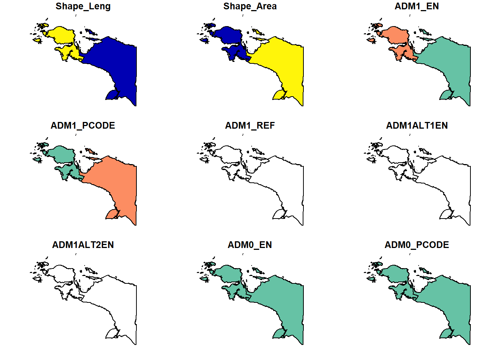
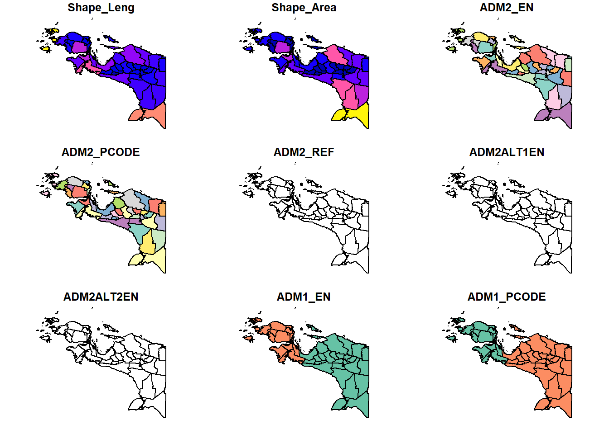
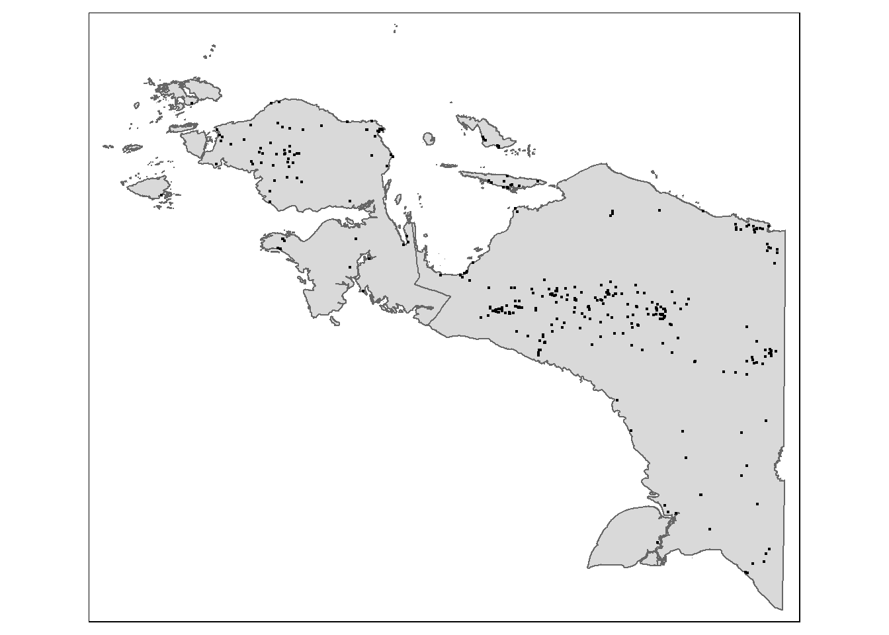

pacman::p_load(tidyverse, sf, tmap, shiny)Take-Home Exercise 3
Take-home Exercise 3: Prototyping Modules for Geospatial Analytics Shiny Application
1.0 Overview
In this exercise, I prototype the exploratory data analysis module of a Shiny application that allows users to investigate the spatial distribution and temporal trends of armed conflict events in Papua, a region of Indonesia that has been experiencing a protracted military conflict since 1962, between Indonesian security forces and separatist guerrilla groups under the umbrella of the Free Papua Movement.
Our application covers the period from 1 January 2015, shortly after Indonesian President Joko Widodo (“Jokowi”) began his first term, to 30 June 2024, towards the end of Jokowi’s second term. It thus provides insights into how the Papua conflict has evolved over Jokowi’s time in office.
2.0 Packages
For this exercise, the following R packages are used:
tidyverse, a collection of R packages designed for data science, and which provides functions to import, transform, and visualise the data.
sf, to import, manage and process vector-based geospatial data in R.
tmap, which provides functions for plotting cartographic quality static point patterns maps or interactive maps.
shiny, which makes it easy to build interactive web applications with R.
All of these packages are supported in R CRAN.
p_load() function of pacman package is used to install and load these packages into the R environment.
3.0 Data Preparation
For this exercise, we will need to prepare the following data layers:
A study area layer in sf polygon feature format, at Indonesia’s admin1 (provinsi/province) level.
A study area layer in sf polygon feature format, at Indonesia’s admin2 (kota & kabupaten/city & regency) level.
A point events layer in sf point feature format, showing the location, date and other attributes of armed conflict events in the Papua region.
3.1 Preparing the admin1 layer
3.1.1 Importing the data and checking the projection
Import idn_admbnda_adm1_bps_20200401 as a simple features object, which we name admin1. This dataset provides information on Indonesia’s admin1 boundaries.
admin1 <- st_read(dsn = "data/adminboundaries", layer = "idn_admbnda_adm1_bps_20200401")Reading layer `idn_admbnda_adm1_bps_20200401' from data source
`C:\ImmanuelLeong\IS415-Geospatial\Take-home_Ex\Take-home_Ex03\data\adminboundaries'
using driver `ESRI Shapefile'
Simple feature collection with 34 features and 12 fields
Geometry type: MULTIPOLYGON
Dimension: XY
Bounding box: xmin: 95.01079 ymin: -11.00762 xmax: 141.0194 ymax: 6.07693
Geodetic CRS: WGS 84admin1 has a total of 34 features, and is projected in WGS 84.
Sometimes, when importing geospatial data into R, the coordinate system of the source data is wrongly assigned during the importing process. We check the CRS.
st_crs(admin1)Coordinate Reference System:
User input: WGS 84
wkt:
GEOGCRS["WGS 84",
DATUM["World Geodetic System 1984",
ELLIPSOID["WGS 84",6378137,298.257223563,
LENGTHUNIT["metre",1]]],
PRIMEM["Greenwich",0,
ANGLEUNIT["degree",0.0174532925199433]],
CS[ellipsoidal,2],
AXIS["latitude",north,
ORDER[1],
ANGLEUNIT["degree",0.0174532925199433]],
AXIS["longitude",east,
ORDER[2],
ANGLEUNIT["degree",0.0174532925199433]],
ID["EPSG",4326]]The EPSG code indicated is 4326, which is correct since the data is projected in WGS 84.
3.1.2 Reprojecting the data
In geospatial analytics, it is very common for us to transform the original data from geographic coordinate system to projected coordinate system. This is because geographic coordinate system is not appropriate if the analysis need to use distance or/and area measurements.
In the following code chunk, we reproject admin1 in the DGN95 / UTM zone 53S project coordinate system, which has EPSG code 23883.
admin1_23883 <- st_transform(admin1, crs = 23883)Using the following code chunk, we verify that we have successfully reprojected admin1 in the the DGN95 / UTM zone 53S coordinate system.
st_geometry(admin1_23883)Geometry set for 34 features
Geometry type: MULTIPOLYGON
Dimension: XY
Bounding box: xmin: -4331262 ymin: 8755925 xmax: 1168187 ymax: 10875090
Projected CRS: DGN95 / UTM zone 53S
First 5 geometries:3.1.3 Selecting the study area
As mentioned earlier, our study area is the region of Papua. This currently consists of 6 provinces: Papua Selatan (South Papua), Papua Tengah (Central Papua), Papua Pegunungan (Mountains Papua), Papua Barat Daya (South-West Papua), Papua Barat (West Papua), and Papua.
However, were only created in 2022, when they were carved out of the original 2 provinces of Papua and Papua Barat. Since the source data was last modified in April 2020, this change has not been reflected, and admin1_23883 only contains the geospatial data for the 2 original provinces in the Papua region, as well as provinces in the rest of Indonesia.
As most of the time period we are studying (1 January 2015 to 30 June 2024) falls before this change, to simplify our analysis, we can use this original data for the entire study period.
Hence, we use the filter() function of dplyr, part of the tidyverse, to extract the data for Papua and Papua Barat, and save it as a new sf data.frame admin1_study. The ADM1_EN field of admin1_23883 contains the name of each province.
admin1_study <- admin1_23883 %>%
filter(ADM1_EN == "Papua" | ADM1_EN == "Papua Barat")
admin1_studySimple feature collection with 2 features and 12 fields
Geometry type: MULTIPOLYGON
Dimension: XY
Bounding box: xmin: -134331.7 ymin: 8986310 xmax: 1168187 ymax: 10103660
Projected CRS: DGN95 / UTM zone 53S
Shape_Leng Shape_Area ADM1_EN ADM1_PCODE ADM1_REF ADM1ALT1EN ADM1ALT2EN
1 63.86288 25.607715 Papua ID94 <NA> <NA> <NA>
2 74.47466 8.010799 Papua Barat ID91 <NA> <NA> <NA>
ADM0_EN ADM0_PCODE date validOn validTo
1 Indonesia ID 2019-12-20 2020-04-01 -001-11-30
2 Indonesia ID 2019-12-20 2020-04-01 -001-11-30
geometry
1 MULTIPOLYGON (((936916.9 90...
2 MULTIPOLYGON (((267868.9 95...As required, admin1_study is a sf polygon data.frame. It has 2 features.
We verify that the geometries of both features in admin1_study are valid.
length(which(st_is_valid(admin1_study) == TRUE))[1] 2We visualise admin1_study using plot(). As expected, this depicts the original 2 provinces of Papua and Papua Barat
plot(admin1_study)
We can now save the admin1_study study area layer using the write_rds() function of readr, part of the tidyverse.
write_rds(admin1_study, "data/rds/admin1_study.rds")3.2 Preparing the admin2 layer
3.2.1 Importing the data and checking the projection
Import idn_admbnda_adm2_bps_20200401 as a simple features object, which we name admin2. This dataset provides information on Indonesia’s admin2 boundaries.
admin2 <- st_read(dsn = "data/adminboundaries", layer = "idn_admbnda_adm2_bps_20200401")Reading layer `idn_admbnda_adm2_bps_20200401' from data source
`C:\ImmanuelLeong\IS415-Geospatial\Take-home_Ex\Take-home_Ex03\data\adminboundaries'
using driver `ESRI Shapefile'
Simple feature collection with 522 features and 14 fields
Geometry type: MULTIPOLYGON
Dimension: XY
Bounding box: xmin: 95.01079 ymin: -11.00762 xmax: 141.0194 ymax: 6.07693
Geodetic CRS: WGS 843.2.2 Reprojecting the data
Again, the data is projected in WGS84, and we reproject it in the DGN95 / UTM zone 53S coordinate system.
admin2_23883 <- st_transform(admin2, 23883)st_geometry(admin2_23883)Geometry set for 522 features
Geometry type: MULTIPOLYGON
Dimension: XY
Bounding box: xmin: -4331262 ymin: 8755925 xmax: 1168187 ymax: 10875090
Projected CRS: DGN95 / UTM zone 53S
First 5 geometries:3.3.3 Selecting the study area
Similar to admin1_23883, the ADM1_EN field of admin2_23883 contains the name of the province that each admin2 subdivision (city or regency) belonged to as of April 2020.
We use the filter() function of dplyr, part of the tidyverse, to extract the data for the admin2 subdivisions that belonged to Papua and Papua Barat, and save it as a new sf data.frame admin2_study.
admin2_study <- admin2_23883 %>%
filter(ADM1_EN == "Papua" | ADM1_EN == "Papua Barat")
admin2_studySimple feature collection with 42 features and 14 fields
Geometry type: MULTIPOLYGON
Dimension: XY
Bounding box: xmin: -134331.7 ymin: 8986310 xmax: 1168187 ymax: 10103660
Projected CRS: DGN95 / UTM zone 53S
First 10 features:
Shape_Leng Shape_Area ADM2_EN ADM2_PCODE ADM2_REF ADM2ALT1EN ADM2ALT2EN
1 7.478910 2.0417988 Asmat ID9415 <NA> <NA> <NA>
2 4.873627 0.1830028 Biak Numfor ID9409 <NA> <NA> <NA>
3 6.826722 1.9319841 Boven Digoel ID9413 <NA> <NA> <NA>
4 1.913528 0.1496381 Deiyai ID9436 <NA> <NA> <NA>
5 3.209777 0.3782397 Dogiyai ID9434 <NA> <NA> <NA>
6 9.412293 0.8938388 Fakfak ID9101 <NA> <NA> <NA>
7 3.696500 0.3771067 Intan Jaya ID9435 <NA> <NA> <NA>
8 7.551512 1.1672374 Jayapura ID9403 <NA> <NA> <NA>
9 2.998729 0.2147504 Jayawijaya ID9402 <NA> <NA> <NA>
10 16.871958 1.3150578 Kaimana ID9102 <NA> <NA> <NA>
ADM1_EN ADM1_PCODE ADM0_EN ADM0_PCODE date validOn validTo
1 Papua ID94 Indonesia ID 2019-12-20 2020-04-01 -001-11-30
2 Papua ID94 Indonesia ID 2019-12-20 2020-04-01 -001-11-30
3 Papua ID94 Indonesia ID 2019-12-20 2020-04-01 -001-11-30
4 Papua ID94 Indonesia ID 2019-12-20 2020-04-01 -001-11-30
5 Papua ID94 Indonesia ID 2019-12-20 2020-04-01 -001-11-30
6 Papua Barat ID91 Indonesia ID 2019-12-20 2020-04-01 -001-11-30
7 Papua ID94 Indonesia ID 2019-12-20 2020-04-01 -001-11-30
8 Papua ID94 Indonesia ID 2019-12-20 2020-04-01 -001-11-30
9 Papua ID94 Indonesia ID 2019-12-20 2020-04-01 -001-11-30
10 Papua Barat ID91 Indonesia ID 2019-12-20 2020-04-01 -001-11-30
geometry
1 MULTIPOLYGON (((833108.1 93...
2 MULTIPOLYGON (((680501.1 98...
3 MULTIPOLYGON (((1164841 929...
4 MULTIPOLYGON (((664348.1 95...
5 MULTIPOLYGON (((621453.9 95...
6 MULTIPOLYGON (((251837.6 96...
7 MULTIPOLYGON (((645554.4 96...
8 MULTIPOLYGON (((1124342 972...
9 MULTIPOLYGON (((933136.6 95...
10 MULTIPOLYGON (((267868.9 95...As required, admin2_study is a sf polygon data.frame. It has 42 features.
We verify that all the geometries in admin2_study are valid.
length(which(st_is_valid(admin2_study) == TRUE))[1] 42We visualise admin2_study using plot().
plot(admin2_study)
We can now save the admin2_study study area layer using write_rds().
write_rds(admin2_study, "data/rds/admin2_study.rds")3.3 Preparing the armed conflict point events layer
3.3.1 Importing the data
Lastly, we import 2015-01-01-2024-06-30-Indonesia.csv. This dataset provides location, date, and other attribute information on 6 types of armed conflict events in Indonesia occurring from 1 January 2015 to 30 June 2024. Since it is in csv format, we use the read_csv() function of readr, part of the tidyverse, to import it, and save it as an object named points.
points <- read_csv("data/2015-01-01-2024-06-30-Indonesia.csv")
glimpse(points)Rows: 17,116
Columns: 31
$ event_id_cnty <chr> "IDN17267", "IDN17269", "IDN17293", "IDN17428", "ID…
$ event_date <chr> "30 June 2024", "30 June 2024", "30 June 2024", "30…
$ year <dbl> 2024, 2024, 2024, 2024, 2024, 2024, 2024, 2024, 202…
$ time_precision <dbl> 1, 1, 2, 1, 1, 1, 2, 1, 1, 1, 1, 1, 1, 1, 1, 1, 1, …
$ disorder_type <chr> "Political violence", "Demonstrations", "Demonstrat…
$ event_type <chr> "Violence against civilians", "Protests", "Protests…
$ sub_event_type <chr> "Attack", "Peaceful protest", "Peaceful protest", "…
$ actor1 <chr> "Military Forces of Indonesia (2014-)", "Protesters…
$ assoc_actor_1 <chr> NA, "AJI: Alliance of Independent Journalists; Jour…
$ inter1 <chr> "State forces", "Protesters", "Protesters", "Rebel …
$ actor2 <chr> "Civilians (Indonesia)", NA, NA, NA, NA, "Civilians…
$ assoc_actor_2 <chr> "TPNPB: West Papua National Liberation Army", NA, N…
$ inter2 <chr> "Civilians", NA, NA, NA, NA, "Civilians", NA, "Stat…
$ interaction <chr> "State forces-Civilians", "Protesters only", "Prote…
$ civilian_targeting <chr> "Civilian targeting", NA, NA, NA, NA, "Civilian tar…
$ iso <dbl> 360, 360, 360, 360, 360, 360, 360, 360, 360, 360, 3…
$ region <chr> "Southeast Asia", "Southeast Asia", "Southeast Asia…
$ country <chr> "Indonesia", "Indonesia", "Indonesia", "Indonesia",…
$ admin1 <chr> "Central Papua", "Jakarta", "East Java", "West Java…
$ admin2 <chr> "Intan Jaya", "Central Jakarta", "Surabaya", "Bogor…
$ admin3 <chr> "Sugapa", "Gambir", "Genteng", "Central Bogor", "Re…
$ location <chr> "Sugapa", "Jakarta - Central", "Surabaya", "Bogor",…
$ latitude <dbl> -3.7430, -6.1806, -7.2492, -6.5944, -6.9222, 3.5833…
$ longitude <dbl> 137.0500, 106.8283, 112.7510, 106.7891, 107.6070, 9…
$ geo_precision <dbl> 2, 1, 1, 1, 1, 1, 2, 1, 1, 1, 1, 1, 1, 1, 1, 1, 1, …
$ source <chr> "Human Rights Monitor", "Kompas", "Tribunnews", "Ko…
$ source_scale <chr> "Other", "National", "National", "National", "Natio…
$ notes <chr> "On 30 June 2024, the Indonesian military forces ar…
$ fatalities <dbl> 1, 0, 0, 0, 0, 0, 0, 1, 0, 0, 0, 0, 0, 0, 0, 0, 0, …
$ tags <chr> NA, "crowd size=no report", "crowd size=no report",…
$ timestamp <dbl> 1720552459, 1720552459, 1720552459, 1721769310, 172…The longitude and latitude fields capture the x- and y-coordinates of the data points respectively. They appear to be in the WGS 84 geographic coordinate system (in which latitudes range from -90 to 90 and longitudes range from 0 to 360).
We then convert points to an sf object.
points_sf <- st_as_sf(points, coords = c("longitude","latitude"), crs = 4326)
st_geometry(points_sf)Geometry set for 17116 features
Geometry type: POINT
Dimension: XY
Bounding box: xmin: 95.2127 ymin: -10.7323 xmax: 140.8694 ymax: 5.8925
Geodetic CRS: WGS 84
First 5 geometries:3.3.2 Importing the data
We reproject points_sf in the DGN95 / UTM zone 53S coordinate system, and save the reprojected data as a new object points_23883.
points_23883 <- st_transform(points_sf, crs = 23883)
st_geometry(points_23883)Geometry set for 17116 features
Geometry type: POINT
Dimension: XY
Bounding box: xmin: -4304403 ymin: 8787709 xmax: 1153416 ymax: 10846150
Projected CRS: DGN95 / UTM zone 53S
First 5 geometries:3.3.3 Selecting points in the study area
points_23883 provides information on armed conflict events throughout Indonesia, and the admin1 field contains the name of the province where each point event took place.
However, unlike the administrative boundaries datasets, the source data here is continually updated. This means that both the original (pre-2022) and new (post-2022) province names are used. We use the group_by() and summarize() functions of dplyr to find all the provinces that are named in points_23883, and save them as a data.frame provinces .
provinces <- points_23883 %>%
group_by(admin1) %>%
summarize()As we can see in provinces, the 6 current provinces are all named (Central Papua, Highland Papua, Papua, South Papua, Southwest Papua and West Papua).
We create a vector containing these province names.
provincenames <- c("Central Papua", "Highland Papua", "Papua", "South Papua", "Southwest Papua", "West Papua")Next, we use filter() to extract only the armed conflict events that take place in these provinces from points_23883. In addition, we use select(), also part of dplyr, to retain only the fields containing the event date, event type, involved parties (actor 1 and actor 2), the province (admin 1) and regency/city (admin2) where the event occurred, the number of fatalities, notes about the event, and the point geometry, for each event.
points_study <- points_23883 %>%
filter(admin1 %in% provincenames) %>%
select(event_date, event_type, actor1, actor2, admin1, admin2, fatalities, notes, geometry)
points_studySimple feature collection with 2942 features and 8 fields
Geometry type: POINT
Dimension: XY
Bounding box: xmin: -23320.68 ymin: 9056317 xmax: 1153416 ymax: 9956392
Projected CRS: DGN95 / UTM zone 53S
# A tibble: 2,942 × 9
event_date event_type actor1 actor2 admin1 admin2 fatalities notes
<chr> <chr> <chr> <chr> <chr> <chr> <dbl> <chr>
1 30 June 2024 Violence against c… Milit… Civil… Centr… Intan… 1 On 3…
2 29 June 2024 Strategic developm… Civil… <NA> Centr… Puncak 0 Disp…
3 29 June 2024 Battles TPNPB… Milit… Centr… Puncak 1 On 2…
4 28 June 2024 Protests Prote… <NA> Papua Jayap… 0 On 2…
5 28 June 2024 Protests Prote… <NA> South… Sorong 0 On 2…
6 28 June 2024 Battles TPNPB… Milit… Centr… Puncak 0 On 2…
7 27 June 2024 Protests Prote… <NA> South… South… 0 On 2…
8 27 June 2024 Protests Prote… <NA> Papua Jayap… 0 On 2…
9 22 June 2024 Battles Milit… TPNPB… South… Maybr… 0 On 2…
10 22 June 2024 Protests Prote… <NA> Papua Jayap… 0 On 2…
# ℹ 2,932 more rows
# ℹ 1 more variable: geometry <POINT [m]>There are 2942 features in the points_study sf point data.frame, corresponding to 2942 armed conflict point events.
We verify that the geometries of all the point events are valid.
length(which(st_is_valid(points_study) == TRUE))[1] 2942We can now save the points_study study area layer using write_rds().
write_rds(points_study, "data/rds/points_study.rds")4.0 Interactive Point Map
tmap_mode("plot")
tm_shape(admin1_study) +
tm_polygons() +
tm_shape(points_study) +
tm_dots()